|
MachV/Mozilla: Mail: Account
Setup
|
UI Specification
|
|
Account Setup
Account Setup Wizard and
Account Settings Dialogs
|
Last Modification:
|
|
Author: Jennifer Glick
Creation Date: 19 December 2000
|
Status: Draft: Clean up of existing dialogs.
Changes shown in red.
|
|
Quicklinks:
Design
Details
Account
Setup Wizard
- Mail
- Newsgroups
- WebMail
Mail/News
Account Settings dialogs
|
Feature Team
|
Engineering:
|
Scott Putterman, Seth
Spitzer, Varada Parthasarathi, Bhuvan
Racham
|
|
Product Marketing:
|
Kevin Murray
|
|
QA:
|
Ninoschka
Baca
|
|
Docs:
|
Robin Foster
Clark
|
|
UE:
|
Jennifer
Glick
|
Please post all comments and suggestions regarding
this spec to the newsgroup,
netscape.public.mozilla.mail-news.
|
Open Issues
-
Related Bugs
- 3610 (BS)- Account Wizard, Netscape Webmail and AOL should be
switched.
- 24873 - [wizard] add accelerators for form
fields.
- 33235 - Shouldn't allow deleting special folders when Acct
Setting setup special folders on server.
- 42955 - Should explain why the Account Wizard is being
opened.
- 45695 - Account Settings: Identity: UI clean up.
- 50362 - Account level names should be equal for Migrated or
New accounts.
- 61078 - Ability to Change Order of Accounts.
- 63633 - add ui to acct manager to allow user to "forget"
password for a server.
- 64230 - Need to know which account is default when you have
multiple mail accounts.
- 109162 - Remove "Advanced Account Settings" In Account
Manager.
- 84692 - Offline UI: Offline panel is too large (to use, for
some people).
- 113488-Remove group boxes from Acct Wizard Server Info
panel
-
Summary
This spec covers the Account Setup Wizard and Account
Settings Dialogs.
The Account Setup Wizard is used to set up new mail or
newsgroup accounts (accounts that were not migrated). It can be run
at anytime the user would like to set up a new mail or newsgroup
account. It is run automatically at startup of Mail IF no 4.x
profile or 3rd party mail applications were found.
The Account Settings Dialogs allow users to manage the
detailed settings of their various Mail, WebMail and Newsgroup
accounts. The Account Settings Dialogs are a separate set of dialogs
from the Preferences dialogs.
*Background Information - Process Flow*
- User downloads the "stub" installer (a piece of code that
downloads the rest of the application)
- Stub installer downloads the pieces as necessary
- The pieces are expanded on the end user's machine
- Activation (Netcenter Registration) is initiated (Netscape
only)
- If user already is a Netcenter member (i.e., a cookie is
found) the user is asked to confirm their existing Netcenter
membership
- If not a Netcenter member, the user is asked to "activate"
membership
- Browser is started
- If the user has exactly 1 profile (which most upgrading users
will), then their 4.x (or other) data is upgraded (if more than
one profile, user will most likely be asked to choose which
profile). The migrated 4.x account should be set to the
default account for new software.
- 4.x data includes preferences (such as email server
settings), address book data, and email messages
- User can then go to Mail (by selecting Tasks | Mail, or by
selecting Mail from the Task Switcher bar. One of 4 things
happens:
- Previous version profile found, no 3rd party mail
applications found - Mail starts. Mail account is default
account.
- Previous version profile found, 3rd party mail
applications found - user asked if they would like to import
from 3rd party mail applications.
- Yes - Import Tool Wizard run. Mail starts up at
completion of wizard.
- No - Mail starts.
- No previous Netscape/Mozilla profile found, 3rd party
mail applications found - user asked if they would like to
import from 3rd party mail applications.
- Yes - Import Tool Wizard run. Mail starts up at
completion of wizard.
- No - New Accounts Wizard starts up.
- No previous Netscape/Mozilla profile found, no 3rd party
mail applications found - New Account Wizard starts
up.
*The items in Bold above are illustrated in a flowchart.
Goals
The Account Settings Dialogs and New Account Wizard
should allow a user to easily setup and/or modify account
information for one or more Mail, or Newsgroup accounts.
|
Basic
|
Intermediate
|
Advanced
|
- Use the Account Setup Wizard to create a new
default Mail Account.
- User the Account Setup Wizard to create additional
Mail Accounts.
- Use the Account Setup Wizard to create Newsgroup
accounts.
- Use the Account Setup Wizard to setup a WebMail
account (NS).
- Use the Account Setup Wizard to setup an AOL
account (NS).
|
- Use the Account Settings Dialogs to modify the
settings for an existing Mail or Newsgroup
account.
- Use the Account Settings Dialogs to modify their
SMTP server.
|
- Use the Account Settings Dialogs to add additional
SMTP servers.
- Use the Account Settings Dialogs to associate SMTP
servers with specified Identities.
- Define Advanced account settings.
|
Target User
The Account Setup Wizard should be straight
forward and easy to use for novice users. It should easily and
quickly walk them through the necessary steps to setting up a
Mail, Newsgroup, Netscape WebMail or AOL account. Only
required information is collected here and basic defaults
for account behavior are chosen for the user.
The Account Settings Dialogs are aimed at more
intermediate and advanced users who want to customize their
accounts, change the default settings, add additional SMTP servers
or associate certain Identities and SMTP servers.
Notes and Assumptions
- SMTP and Identity are not bound.
- Mail from multiple servers/multiple accounts can be retrieved
(incoming servers) with a single Internet connection (user/system
does not have to connect to each server separately to retrieve
mail for each account). A single connection is needed to get the
user onto the Internet and from there, Mail is able to connect to
each individual server.
- Mail from multiple accounts can be sent out at one time using
one SMTP server (user/system does not have to connect to each
server separately to send mail).
- In order to use ONE specified SMTP server for ALL outgoing
mail (from different identities), the user must be connected to
the Internet via the account paired with the specified SMTP
server.
- When a user launches Mail, and has multiple accounts set up,
the user will see a login (name, password) dialog for each account
(as necessary).
Design Details
Access
The Account Setup Wizard and Account Settings Dialogs are
accessible to users as follows:
|
Account Setup Wizard
|
Account Settings Dialogs
|
- After completing Activation (Netcenter registration),
users are asked if they would like to import an existing
account or setup a new account.
- From the Mail File, New menu. "Account".
- From the Mail "File" menu, users can select
"Import...".
- From the Profile Manager, users are given the option
to set up a new Mail or Newsgroup account.
- From the Mail Launcher Icon (only if no accounts have
been set up yet and user selects a Mail related
item)
- User selects any Mail related item (button, menu,
etc.) and does not have Mail configured.
- From the Account Settings Dialogs. Selecting the "New
Account" button.
|
- From the Edit menu, Mail component, "Mail/News
Account Settings..."
- Context menu in mail folder pane. When an account has
focus, "Mail/News Account Settings..." is in the context
menu.
- From the Thread Pane when a top level Account Name is
selected, context menu, "Account Properties...".
|
Account Setup Wizard
The Account Setup Wizard is launched automatically the first time
Mail is run, if an existing Netscape/Mozilla profile is not migrated.
It can also be launched on its own at anytime when the user requests
to set up a new account.
The Account Setup Wizard should be straight forward and easy to
use for novice users. It should easily and quickly walk users through
the necessary steps for setting up a Mail, Netscape WebMail, AOL or
Newsgroup account. Only required information is collected here
and basic defaults for account behavior are chosen for the user.
Fields are pre-populated where ever possible.
Mail
1 - Account Wizard Start (Shared Dialog)
Minor wording change in
description
Note: If the New Account Wizard is launched automatically
(the user didn't request to create a new account) when the user
launches Mail for the first time, additional text is displayed on
this dialog: "In order to receive email or newsgroup messages,
you first need to set up a Mail or Newsgroup account." This
appears as a separate paragraph above the rest of the dialog (not
currently implemented).
2 - Name & Email (Shared Dialog)
Changed from "Identity" to "Name &
Email". Do users understand (or need to) the concept of Identity?
Text describing "Identity" removed.
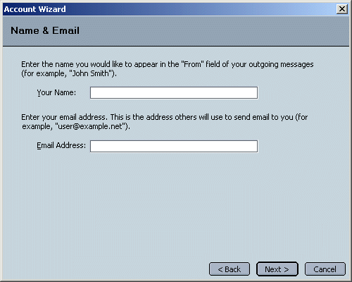
3 - Server Information (Mail specific)
Remove group boxes around items. No other
panels in wizard have groupboxes. Change name of label from "Server
Name" to "Incoming Server". Easier at a glance to know what info is
needed without having to read the text above (WHICH
server?).
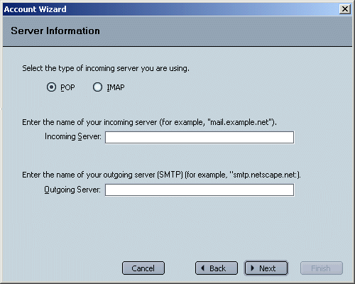
The text entry field for "Outgoing Server" only appears on this
dialog if the user has NOT already specified this information for
another account. Otherwise, the following dialog will be
displayed instead:
Same as above. Also, descriptive text for
existing smtp server is reduced. Its currently too wording and
potentally confusing.
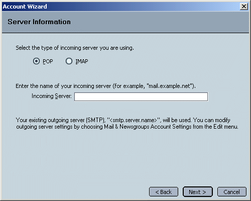
4 - Name (Mail)
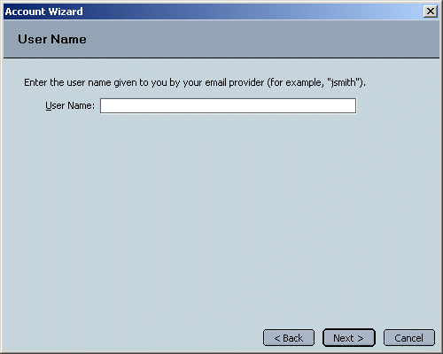
5 - Account Name (Shared Dialog)
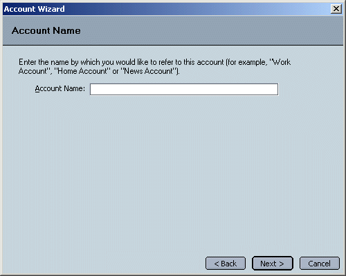
This field is pre-populated with a default value:
- For a Mail Account - "<User's Email Address>"
- For a Newsgroup Account - "<Host Name>"
6 - Congratulations (Shared
Dialog)
"Download new messages now" checkbox is only visible for POP
accounts. It is enabled by default.
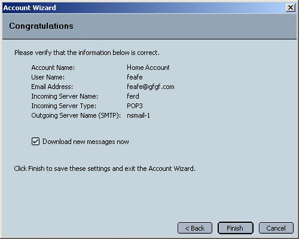
Newsgroup
1 - New Account Wizard Start (Shared Dialog)
Same as mail
2 - Name & Email (Shared Dialog)
Same as mail
3 - Server Information (News)
Change name of label from "Server Name" to
"Newsgroup Server". Easier at a glance to know what info is needed
without having to read the text above.
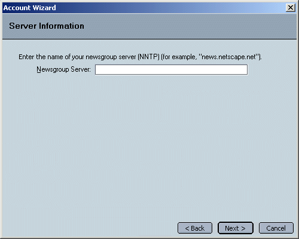
4 - Account Name (Shared Dialog)
This field is pre-populated with a default value:
- For a Mail Account - " <User's Email Address>"
- For a News Account - "<Host Name>"
5 - Congratulations (Shared Dialog)
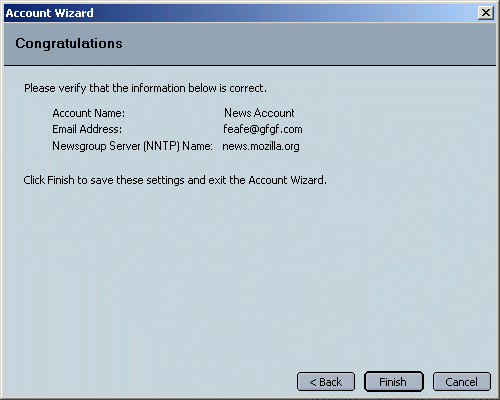
Note: User Name is not displayed.
Netscape WebMail (Netscape Only)
1 - New Account Wizard Start (Shared Dialog)
Same change as mail.

2 - Name & Email
Same change as mail.
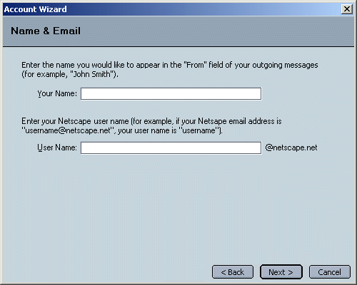
3 - Congratulations (Shared Dialog)
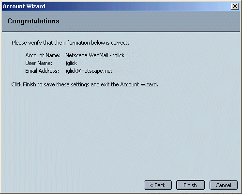
AOL Mail (Netscape Only)
1 - New Account Wizard Start (Shared Dialog)
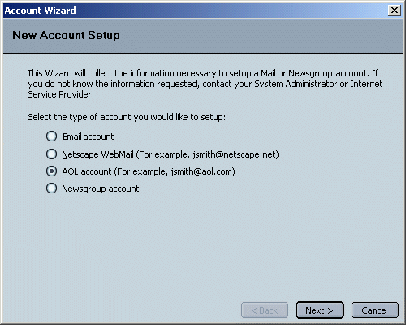
2 - Name & Email
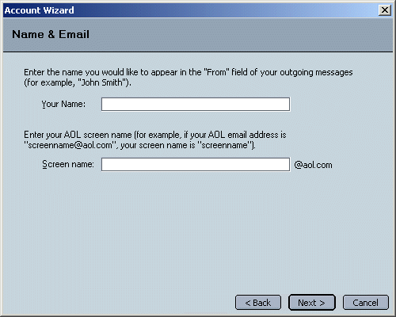
3 - Congratulations (Shared Dialog)
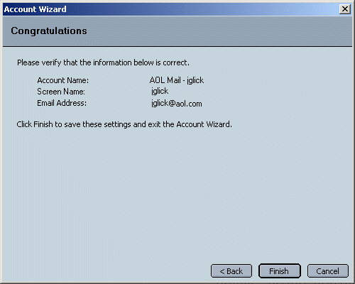
Mail/News Account Settings
Dialogs
The Mail/News Account Settings dialogs let the user manage the
settings of their various Mail, WebMail and Newsgroup accounts.
Shared buttons
- OK - Accepts the changes (cumulative) and closes the
dialog.
- Cancel - Ignores the changes (cumulative) and closes
the dialog.
- Add - Launches the Account Setup Wizard.
- Set as Default - Sets a selected account as the default
account. This button is only available if an account is
selected/has focus. The default account should have the word
"Default" in parenthesis after the name of the account. For
example, Account1 (Default). If there is only one account, it is
automatically the default ("Default" should still appear after the
account name). As new accounts are added, the first account set up
remains the default unless the user changes this. If the
default account is selected, the "Set Default" button is disabled.
If another account (non-default) is selected, the "Set Default"
button is enabled. Local Folders, Outgoing Servers can not be the
default account.
- Duplicate (currently out) - Creates a duplicate
copy of a selected account. The word "Copy" is appended to the end
of the account name. The new account should also appear in the
tree to the left. This button is only available if an
account is selected/has focus.
- Remove - Removes a selected account. A confirmation box
is shown. This button is only available if an account level item
is selected/has focus. Disabled when Local Folders or Outgoing
Server is selected.
- Move Up (currently out) - Moves a selected
account up in account order. The order shown here is the same that
will be displayed in 3 Pane Mail. This button is only available if
account level item is selected/has focus. Disabled when Local
Folders or Outgoing Server is selected.
- Move Down (currently out) - Moves a
selected account down in account order. The order shown here is
the same that will be displayed in 3 Pane Mail. This button is
only available if account level item is selected/has focus.
Disabled when Local Folders or Outgoing Server is selected.
Note: As a user changes from account to account or account
property (by highlighting items on the left), any changes made to the
current view are not saved until the user clicks "OK".
1. Account - IMAP, POP, Netscape WebMail
The name of the panel should be "Account Settings -
<accountname>".
"Advanced" button moved to Server Settings
panel ( bug 109162).
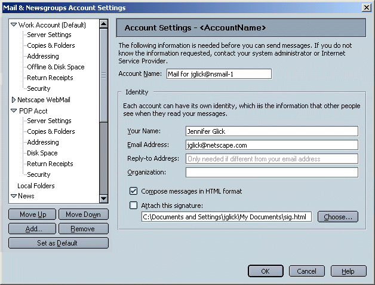
- Account Name - Text field used to name an account. Each
account must have a distinct name.
- Your Name - Text field. Required.
- Email Address - Text field. Required.
- Compose messages in HTML format - Checked by default
for Mail accounts.
- Attach signature - Text field displaying the location
of a signature file.
- Choose - Used to search the users computer for a
signature file.
2. Account - News
The name of the panel should be "Account Settings -
<accountname>".
Same as Mail changes.
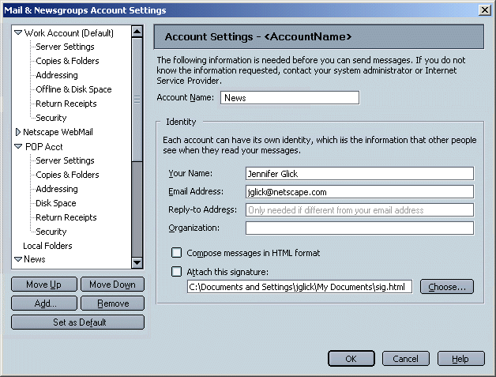
3. Account - Server - POP
The name of the panel should be "Server Settings -
<accountname>".
Add "Advanced" button
per bug 109162).

- "Automatically download any new messages" is a sub widget of
"Check for new messages every X minutes" and should only be
enabled if its parent widget is enabled/check. Otherwise, it
should be disabled/gray.
- "Delete messages on server when they are deleted locally" is a
sub widget of "Leave messages on server" and hence should only be
enabled if its parent widget is enabled/check. Otherwise, it
should be disabled/gray.
- When "Use secure connection (SSL)" is uncheck, Port=110, when
checked, Port=995.
- Note: When "Use secure connection (SSL)" is checked, the
account level icon in Three Pane should include a lock.
- Advanced - Opens the Advanced Identity Settings dialog
(below).
3a. Server Settings - POP - Advanced
The name of the dialog should be "Advanced Server Settings -
<accountname>".
Name of dialog changed to match new parent
window. "Server" label changed to "Outgoing Server".
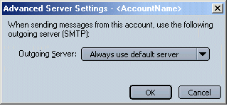
- Outgoing Server - allows users to associate the
current account with a predefined SMTP Server.
4. Account - Server - IMAP
The name of the panel should be "Server Settings -
<accountname>".
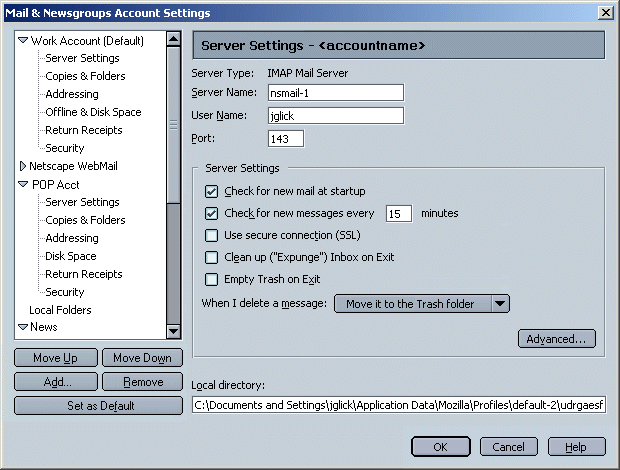
- When I delete a message: - Drop down list with the 3
different trash models available.
- Advanced - Opens the "Advanced IMAP Server Settings"
dialog (below).
Note: When "Use secure connection (SSL)" is checked, the account
level icon in Three Pane should include a lock.
4a. Server Settings - IMAP - Advanced
Modify dialog
per bug 109162.
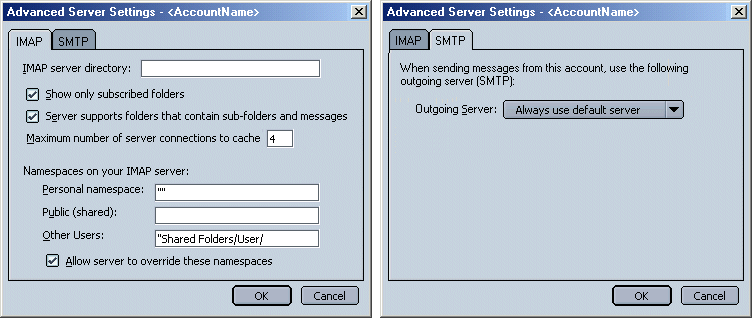
5. Account - Server - News
The name of the panel should be "Server Settings -
<accountname>".
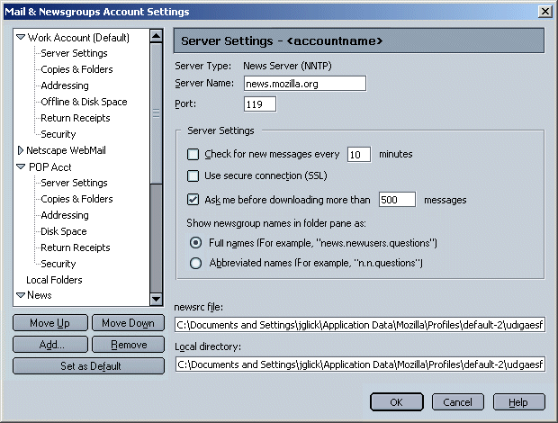
Note: When "Use secure connection (SSL)" is checked, the account
level icon in Three Pane should include a lock.
6. Account - Server - AOL
7. Account - Server - Netscape WebMail
Same as ISP IMAP account.
8. Account - Copies & Folders - IMAP and POP
The name of the panel should be "Copies & Folders -
<AccountName> "
Combine, "Bcc <user's email>" and "Bcc
this address" checkboxes into one.
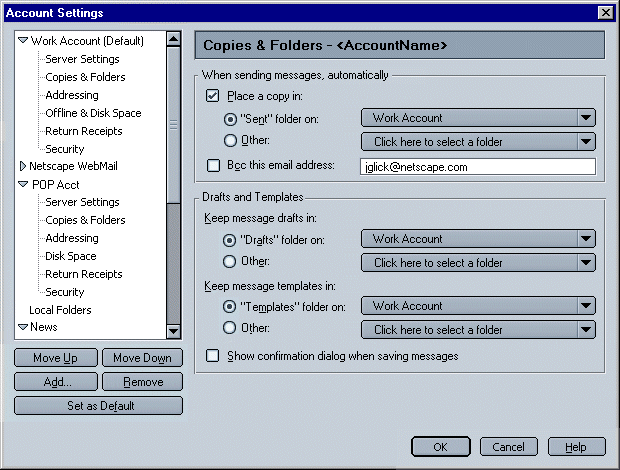
Default settings for "Copies & Folders" preferences
- For Mail, both IMAP and POP - Sent messages, Draft messages
and Templates messages are saved in the "Sent", "Drafts" or
"Templates" folder respectively, of their associated account
(instead of in the "Local Folders"
structure).
- For News - Sent messages, Draft messages and Template messages
are saved in the "Sent", "Drafts" or "Templates" folder
respectively, of the default mail account. If there is no existing
default mail account (only a news account is set up), then
messages will default to the correct folder within "Local
Folders".
- If the user later adds a default mail account (when there was
only a news account before) or changes the default mail account
from one account to another, the preference for Send, Drafts and
Templates of existing accounts is NOT changed but remains as
originally set. For example, user creates a news account only.
"Sent" mail would default to a "Sent" folder within the "Local
Folders" structure. The user then sets up a mail account. Sent
news still goes to the "Sent" folder within the "Local Folders"
structure (but user can change this in prefs).
9. Account - Copies & Folders - AOL
Not available for AOL accounts.
10. Account - Copies & Folders - News
The name of the panel should be "Copies & Folders -
<AccountName>".
Same as mail.
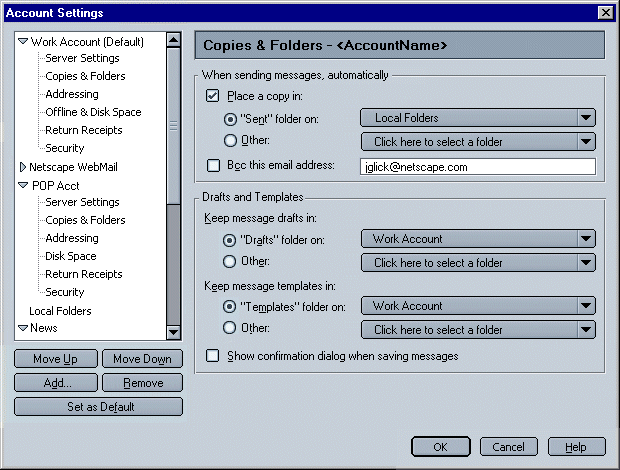
Default settings for "Copies & Folders" preferences
- For Mail, both IMAP and POP - Sent messages, Draft messages
and Template messages are saved in the "Sent", "Drafts" or
"Templates" folder respectively, of their associated account
(instead of in the "Local Folders"
structure).
- For News - Sent messages, Draft messages and Templates
messages are saved in the "Sent", "Drafts" or "Templates" folder
respectively, of the default mail account. If there is no existing
default mail account (only a news account is set up), then
messages will default to the correct folder within "Local
Folders".
- If the user later adds a default mail account (when there was
only a news account before) or changes the default mail account
from one account to another, the preference for Send, Drafts and
Templates of existing accounts is NOT changed but remains as
originally set. For example, user creates a news account only.
"Sent" mail would default to a "Sent" folder within the "Local
Folders" structure. The user then sets up a mail account. Sent
news still goes to the "Sent" folder within the "Local Folders"
structure (but user can change this in prefs).
11. Account - Offline & Disk Space - IMAP
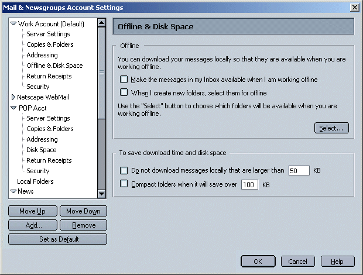
12. Account - Disk Space - POP
Shorten descriptive text.
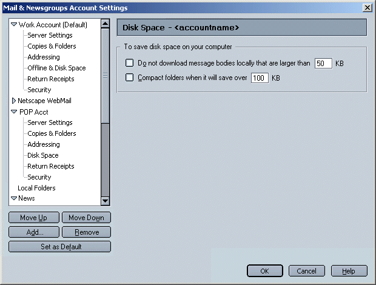
13. Account - Offline & Disk Space - News
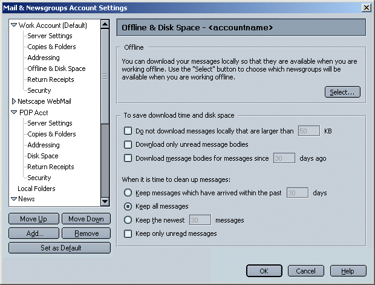
14. Account - Offline & Disk Space - WebMail
15. Account - Offline & Disk Space - AOL
16. Account - Addressing - IMAP, POP, News, WebMail
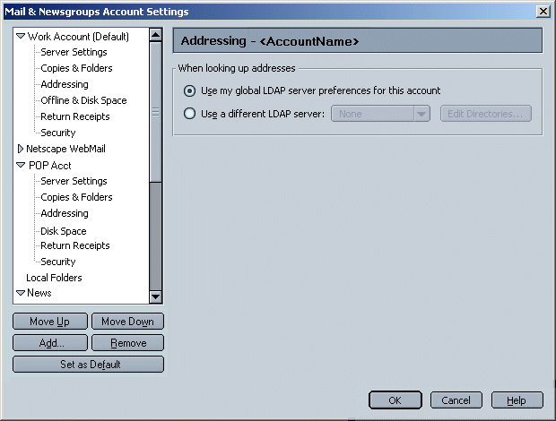
17. Account - Addressing - AOL
Not available?
18. Outgoing (SMTP) Server Settings
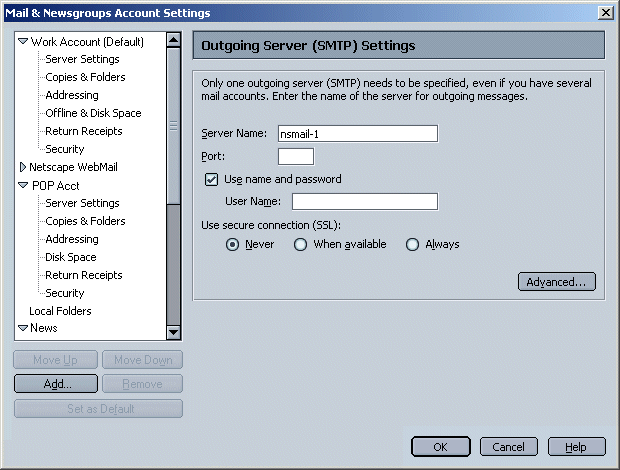
- Server Name - Text field for user to enter the name of
the outgoing (SMTP) server.
- Use name and password - Checkbox so user will be
prompted for user name and/or password.
- User Name - Text field for user to enter their user
name for an SMTP server. Only available if "Use name and password"
is checked.
- Use secure connection (SSL) - "Always", "When
available" and "Never".
18a. Outgoing Server (SMTP) - Advanced
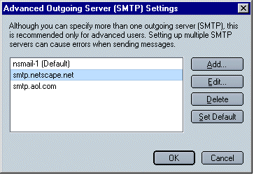
- Add - Opens the "SMTP Server" dialog (below). Used to
add a new SMTP server.
- Edit... - Opens the "SMTP Server" dialog (below). Used
to edit an existing SMTP server.
- Delete - Removes the selected SMTP server. This button
is only available if an account is selected/has focus.
- Set Default - Sets the selected SMTP server as the
default account. This button is only available if an account is
selected/has focus. Results are displayed on the parent dialog,
"Mail & News Account Settings" (above).
Note: Netcenter WebMail account will add its SMTP server
information to the advanced SMTP list.
SMTP Server
Used to add a new, or edit an existing, SMTP server.
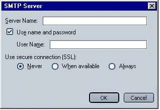
19. Account - Return Receipts - All
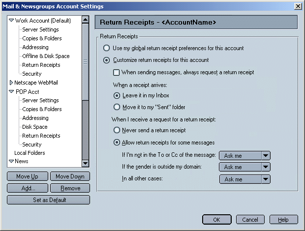
20. Account - Security - Mail

21. Account - Security - News
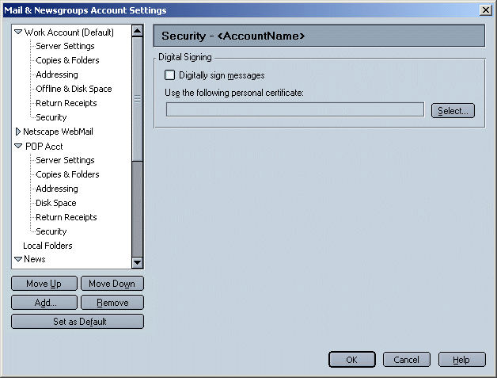
Issues
- Is it possible for Messenger to determine how the user is
connected to the Internet (from which account)? If so, users could
enter an SMTP server for each multiple account and when the user
wanted to send mail, Messenger could be smart enough to use the
SMTP server associated with the account that the user is currently
using to access the Internet. This would prevent the user from
ever seeing error messages when sending email (if they are
connected through an account which is not there 'default' SMTP
server account), make it more understandable for users who expect
to enter an SMTP server for each account, and allow advanced users
to enter multiple SMTP servers. No, this is not possible at
this time.
- Should Account Setup be separated from the Preferences
dialogs? "Account Settings" will be separate dialogs accessed
from the "Edit" menu. 6/24/99, Mail Issues meeting.
- Multiple SMTP servers: As a first step, we will allow users to
enter only one SMTP server (instead of multiple). May provide
functionality to add multiple SMTP servers (for advanced users) at
a later time. 5/14/99. This reversed on 6/24/99, Mail Issues
Meeting. Multiple SMTP servers will be allowed.
- Multiple Identities: One identity per account allowed.
5/14/99
- Should certain preferences (html vs. plain text, Trash
behavior, Draft and Templates folders, etc.) be associated with a
specific account and located within the Account Setup Dialogs (a
separate item from the preferences), or should they be co-located
with the other Preferences in the Preferences dialogs?
Preferences specific to servers (such as Trash and Special
Folders) will be located in the Account Settings Dialogs. 6/24/99,
Mail Issues Meeting.
- How will Netcenter WebMail account server properties
be handled? Special case SMTP server? They will be handled
like any other IMAP account. Fields will be pre-populated (but
still editable). Users can have as many WebMail accounts as they
like. Certain UI elements will be disabled or not visible as
necessary. 6/30/99.
- "New Account" button, automatically launches the Account
Setup Wizard. This may upset advanced users. There there a way
that this button could be a fly out (like MS's "New" button does)
and users could pick, "Create using Wizard" or "Create Manually"?
"New Account" will always launch the Account Wizard.
6/30/99.
- "Default Account". Is this necessary? What are the benefits
to being the default account? Does Mail and News each have their
own Default account? Can a WebMail account be the default?
Both Mail and News will have a Default Account. When the client
doesn't have enough information to know what host to send/post a
message through, the default account is used. A WebMail account
can be a default. 6/30/99.
- Each account must have an "Account Name"? We give it one if
users doesn't or show dialog? Must each "Account Name" be
distinct? News, Mail and WebMail accounts will have a distinct
Account Name. SMTP will not have an account name. If the user
doesn't specify an account name, we will provide one. It will be
created using the account server name. 6/30/99.
- Local Mail directory and Local News directory. Are these
per account or global? Where should they be located? Account
Settings or Preferences (Mail and Newsgroups). These will be
per account. Located on the "Server" dialog. 6/30/99.
- "Ask me before downloading x messages". Is this per News
account? Per Account. 6/30/99.
- Is SSL secure (Mail) or encrypted (News) connection? (We
describe it two diff ways currently). "Secure". 6/30/99.
- News Server Settings: Which password method is correct (see
dialog)? Currently, the Edit version is different than the New
version. Use single checkbox method. 6/30/99.
- Does News Identity need an "Advanced" dialog as well?
No. 6/30/99.
- SMTP Servers: These need "Account Name" as well? No.
6/30/99.
- Congratulations dialogs. Shouldn't the web dialogs be the
same as the client dialogs? If so, can the additional info, "Login
Name", "Email Address" and "http://..." be added? Dialogs will
be the same. Summary info will be provided where appropriate.
6/30/99.
- Do we need a "Log into this account at startup" option for
each account? Yes.
Previous Spec
{kind=link}